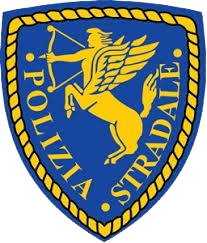

Commissariato - Sede Civico 1025
La Polizia Stradale di Milano si occupa della vigilanza, prevenzione e repressione delle violazioni al Codice della Strada. Tra i compiti principali rientrano:
I cittadini possono trovarci presso la sede al civico 1025.
| Grado | Nome |
|---|---|
| Vice Commissario | Parisi Matteo |
| Ispettore | Ruggero Perugini |
| Sovrintendente | Gianmarco Tocco |
| Assistente | Francesco Stasi |
| Articolo | Descrizione | Importo | Condanna |
|---|---|---|---|
| Art. 7 CdS | Chiunque violi un varco ZTL attivo senza dovuta licenza | 108 € | 0 mesi |
| Art. 78 CdS | Modifiche al veicolo non omologate o non approvate | 1080 € | 0 mesi |
| Art. 116 CdS | Guida senza patente | 5644 € | 12 mesi |
| Art. 142 c.7 CdS | Superamento limite di velocità non oltre i 10 km/h | 108 € | 0 mesi |
| Art. 142 c.8 CdS | Superamento limite di velocità oltre i 10 km/h ma non oltre i 40 km/h | 434 € | 0 mesi |
| Art. 142 c.9 CdS | Superamento limite di velocità oltre i 40 km/h ma non oltre i 60 km/h | 1400 € | 10 mesi |
| Art. 142 c.9 bis CdS | Superamento limite di velocità oltre i 60 km/h | 2115 € | 6 mesi |
| Art. 143 c.11 e 12 CdS | Guida contromano | 1472 € | 0 mesi |
| Art. 154 c.6 e 7 CdS | Inversione di marcia in prossimità di incroci | 216 € | 0 mesi |
| Art. 6, 7, 157 e 158 CdS | Divieto di sosta e fermata | 108 € | 0 mesi |
| Art. 146 CdS | Violazione della segnaletica stradale | 416 € | 0 mesi |
| Art. 170 c.1 e 6 CdS | Tentato decollo | 208 € | 0 mesi |
| Art. 171 CdS | Mancato uso del casco protettivo (motocicli e ciclomotori) | 208 € | 0 mesi |
| Art. 186 CdS | Guida sotto l’influenza dell’alcool | 1357 € | 0 mesi |
| Art. 189 c.5 CdS | Comportamento in caso di incidente | 758 € | 0 mesi |
| Art. 189 c.6 CdS | Fuga in caso di incidente con danni a persone | 0 € | 6 mesi |
| Art. 192 c.7 CdS | Inosservanza dell’ALT o mancata osservanza obblighi verso agenti | 3750 € | 0 mesi |